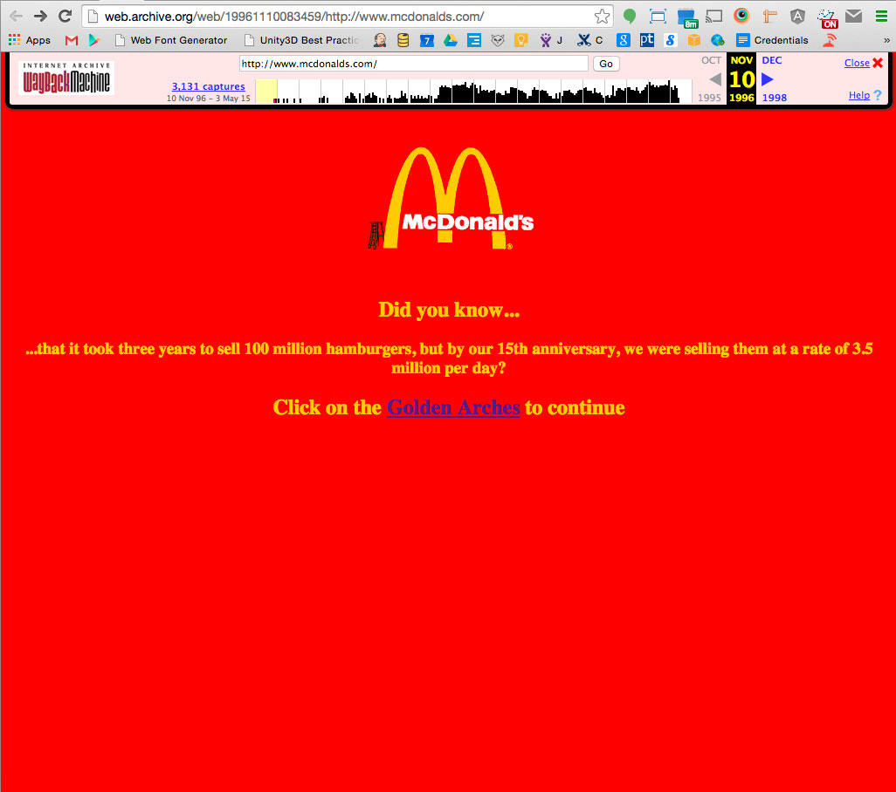
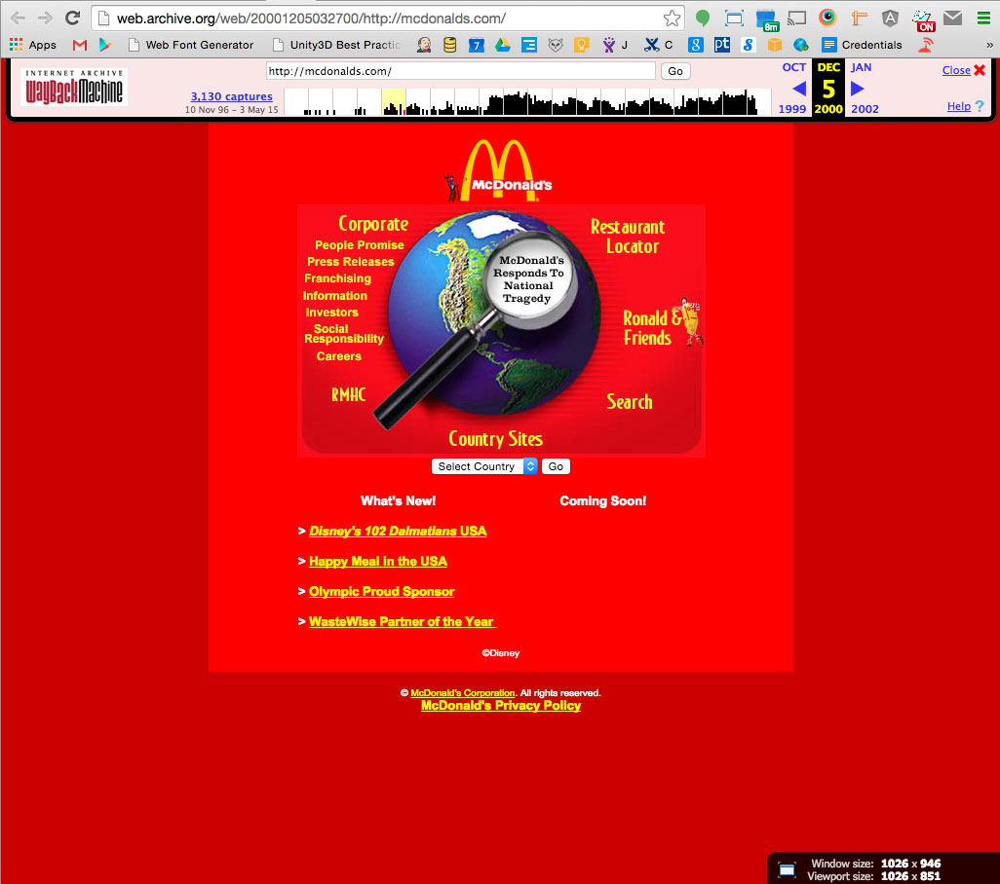
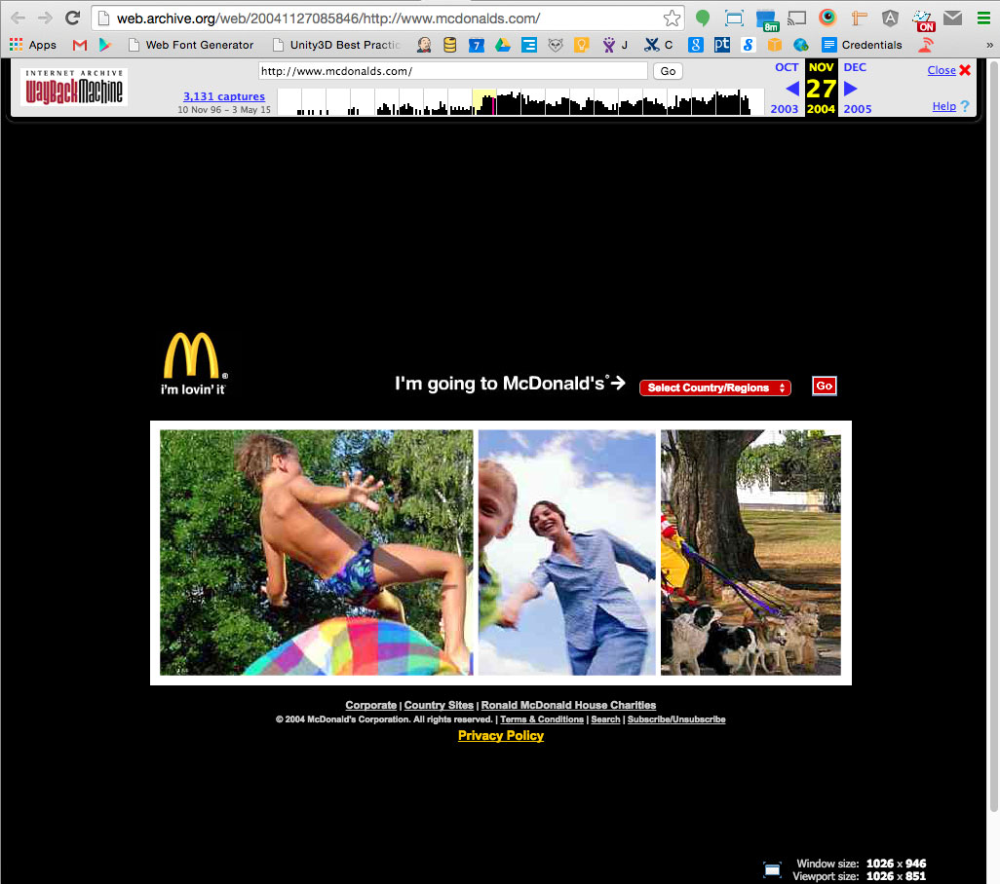
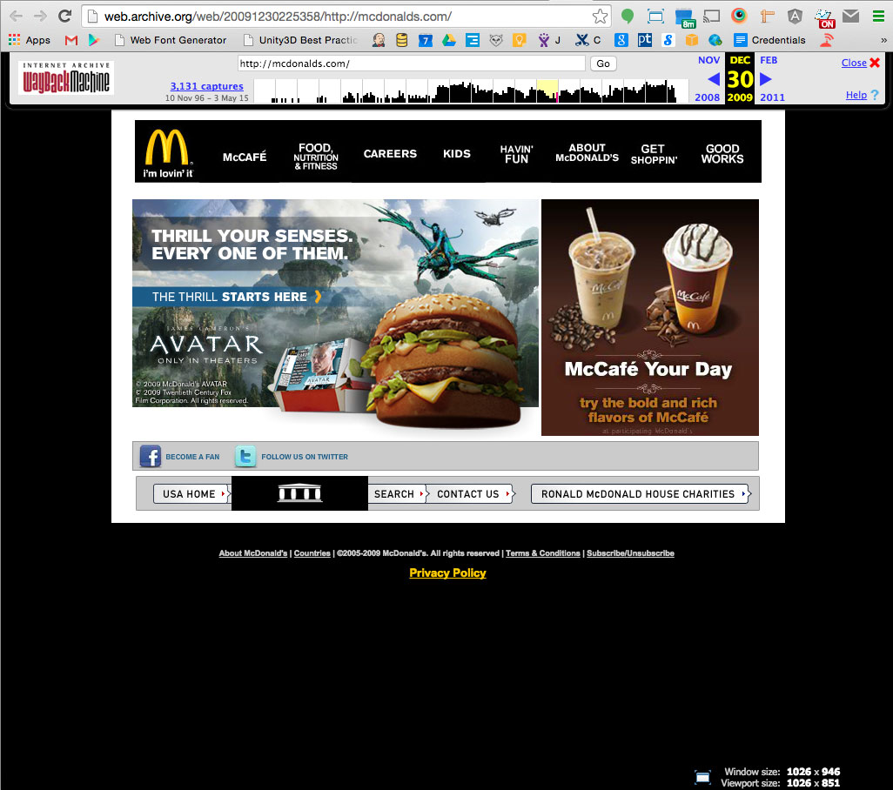
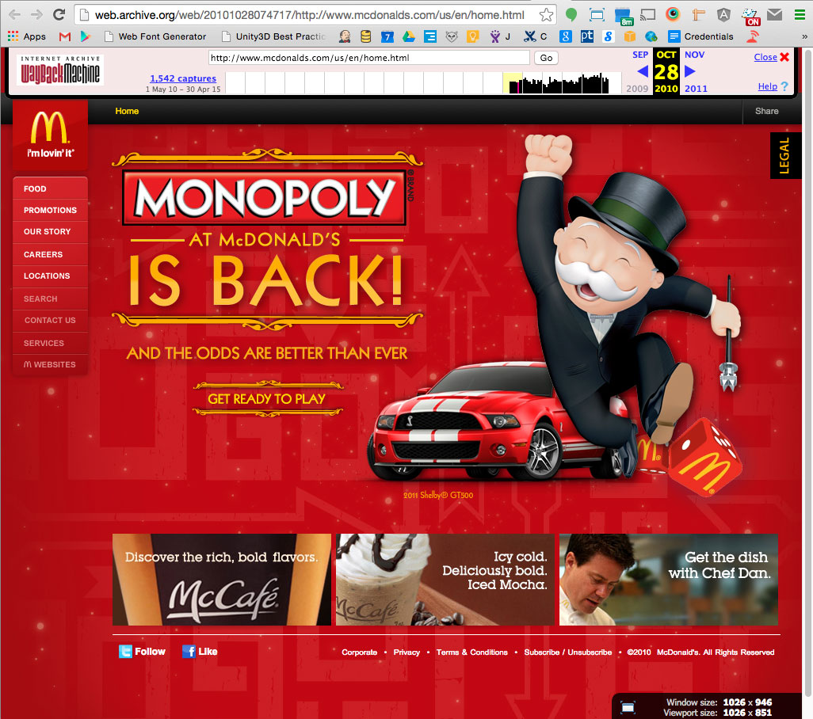
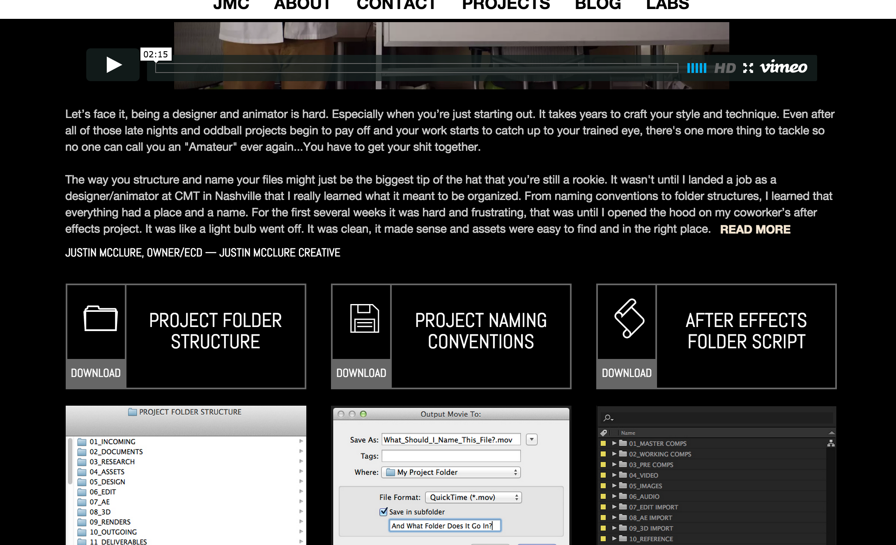
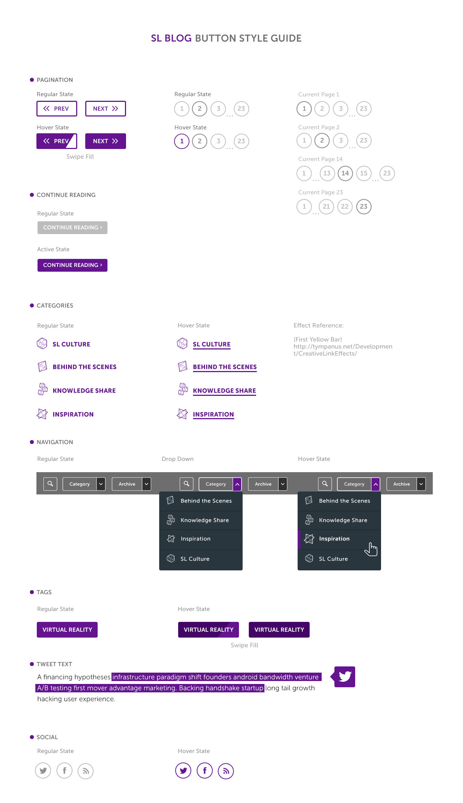
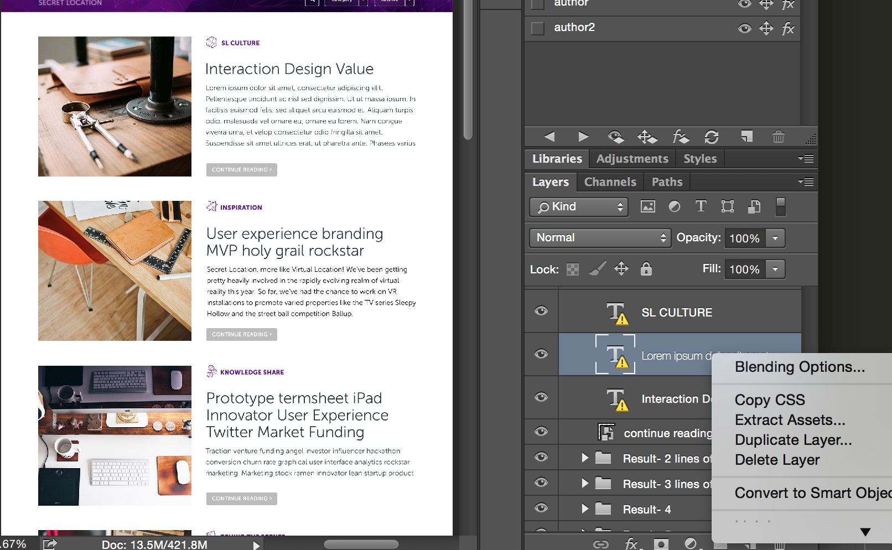
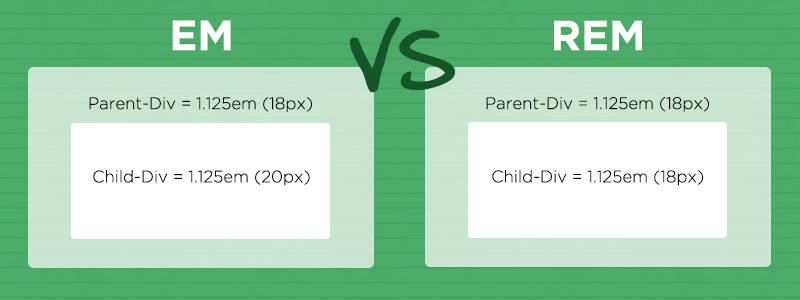
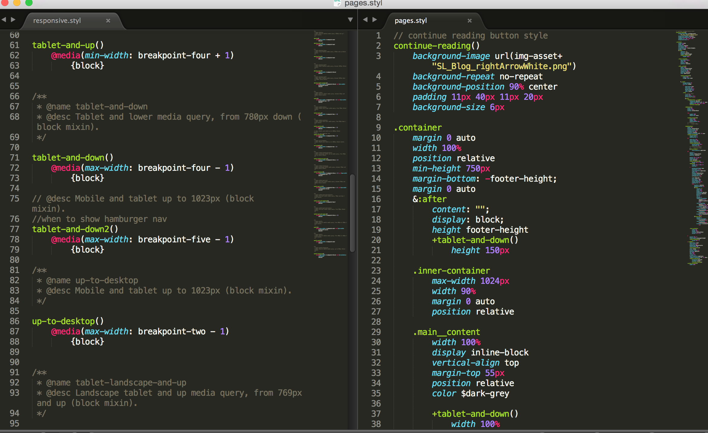

Pixel Perfect
PSD hand-offs
Front-end developer

"The frontend of an application is less about code and more about how a user will interpret the interface into an experience." - Mike Jewitt
McDonald's 1996
McDonald's 2000
McDonald's 2004
McDonald's 2009
McDonald's 2010
FEDs make an art director’s vision come to life
much like
engineers make an architect's vision come to life
You guys are engineers
and... engineers don't work by eye-balling blueprints
so... don't eye-ball PSDs!
Pixel perfection on the web is nearly impossible.
but... challenge yourself to get as close as you can.
Respect
Creatives are your buddiez,
they are there to support and help you.
"Layers are messed."
Structure design files, organize directories, and naming conventions (thanks Nowak)
"They don’t know web design."
Teach them
Request a style guide - figure out what should be h1, h2, h3, h4
"Impossible design."
Talk to them. They are people too.
PSD handoffs

Every FED should have Photoshop.
Ask Amanda if you don't.
Open Photoshop
Look at the dimensions of the PSD first,
and then size your browser the same
(since responsive will throw off your sizes)
Use the same copy and images,
so you can easily see if its accurate
Start measuring!
Measure heights, widths, gutter, fonts, etc.
Tools
Photoshop - Copy CSS
Fonts
Rem / em / px?
reference 1 | reference 2 | reference 3 Inform your creatives to use “web fonts”
Responsive or Adaptive?
Depends on design.
1280 | 1024 | 768 | 640 | 480 | 320
Animations
Ask for references
Ask for animatic